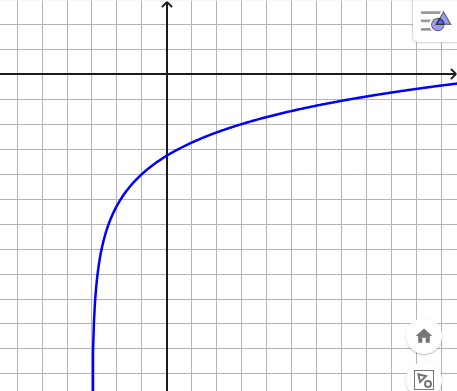

scrivere la legge della funzione \(g\) il cui grafico è
compresso verticalmente di un fattore \(2\) rispetto a quello di \(f\).
scrivere la legge della funzione \(h\) il cui grafico è
traslato di \(1\) unità verso sinistra rispetto a quello di \(g\).
scrivere la legge della funzione \(p\) il cui grafico è
compresso orizzontalmente di \(2\) unità verso destra rispetto a quello di \(h\).
scrivere la legge della funzione \(q\) il cui grafico è
traslato di \(3\) unità verso il basso rispetto a quello di \(p\).
Soluzione
\(g(x) = \dfrac{x^2 - 1}{2}\)
\(h(x) = \dfrac{x^2-2x}{2}\)
\(p(x) = 2x^2-2x\)
\(q(x) = 2x^2-2x - 3\)
Svolgimento
Siccome il grafico di \(g\) è compresso verticalmente di un fattore
\(2\) rispetto a quello di \(f\) si ha
\[
g(x) = \dfrac{f(x)}{2} = \dfrac{x^2 - 1}{2}
\]
Il grafico di \(h\) è traslato di \(1\) unità verso sinistra rispetto a quello di \(h\), di conseguenza
\[
\begin{align*}
h(x) = g(x - 1)
&=\dfrac{(x - 1)^2 - 1}{2}
\\\\
&=\dfrac{x^2 + 1 -2x - 1}{2}
\\\\
&=\dfrac{x^2-2x}{2}
\end{align*}
\]
Abbiamo che il grafico di \(p\) grafico è
compresso orizzontalmente di \(2\) unità verso destra rispetto a quello di \(h\).
\[
\begin{align*}
p(x)
&= h(2x)
\\\\
&=\dfrac{(2x)^2-2(2x)}{2}
\\\\
&=\dfrac{4x^2-4x}{2}
\\\\
&=2x^2-2x
\end{align*}
\]
Infine il grafico di \(q\) è traslato di \(3\) unità verso il basso rispetto a quello di \(p\).
\[
q(x)
&= p(x) - 3
\\\\
&= 2x^2-2x - 3
\]
Esercizio
\[
log_{2}^2(x) - log_{2}(x^3) - 4 = 0
\]
Suggerimento
Applicate la regola \(log_{_b}(A^n) = n \, log_{_b}(A)\) al secondo addendo.
Soluzione
L'equazione è risolta per \(x = \dfrac{1}{2}\) e \(x = 16\).
Esercizio
\[
2\,log_{_3}(x - 1) - log_{_3}(x + 11) = 1
\]
Soluzione:
L'equazione è risolta per \(\,\,\, x = \dfrac{5 + 3\sqrt{17}}{2}\).
Esercizio
Stabilire la legge della funzione logaritmica rappresentata nel grafico

Soluzione:
La funzione è definita dalla legge \(f(x) = log_{3}(x + \dfrac{3}{2}) - 2\)
Esercizio
Rappresentare i grafici delle funzioni
\[
f(x) = log_{_4}(x + 2) - 1 \qquad g(x) = log_{_4}(x - 4) + 2
\]
Stabilire la coordinata \(x\) del punto di intersezione tra i grafici di \(f\) e \(g\).
Soluzione:
La coordinata \(x\) del punto di intersezione tra i grafici è \(x = \dfrac{258}{63}\).